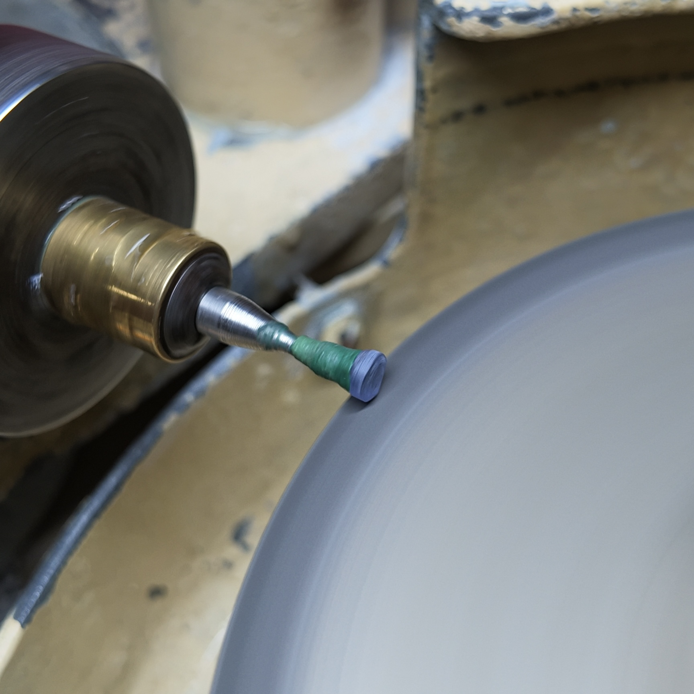

01
Sapphire Single Stones
Individual gemstones selected for colour, cut, clarity and character, including natural sapphires from Sri Lanka.
Enquire About Stones →SINCE 1994 · RATNAPURA, SRI LANKA
Authentic Ceylon gemstones, professionally cut and carefully selected in the heart of Sri Lanka’s gem industry.
THE COLLECTION
Explore our gemstone categories and enquire directly for availability, specifications and worldwide shipping.

OUR COLLECTION
From individual sapphires to calibrated stones and jewellery, our collection reflects the colour, precision and character of Sri Lankan gemstones.
View categories →Individual gemstones selected for colour, cut, clarity and character, including natural sapphires from Sri Lanka.
Enquire About Stones →
Carefully calibrated sapphire sizes for jewellery makers, designers and manufacturers.
Enquire About Stones →Precious and semi-precious gemstones selected for jewellery, collecting and creative design.
Ask About Other Gems →
Elegant gemstone jewellery presented with the same attention to colour, proportion and craftsmanship.
Enquire About Jewellery →ROSARIO GEMS & LAPIDARY
Established in 1994 in Ratnapura, Sri Lanka, Rosairo Gems & Lapidary is a government-registered gemstone business supplying natural gemstones to clients and partners around the world.
Our work spans natural sapphires, precious and semi-precious gemstones, calibrated stones, diamond-cut sapphires and jewellery, with a focus on careful selection and professional cutting.
Professional cutters
and gemstone exporters
OUR CRAFT

Natural stones are selected according to colour, size, clarity and intended use.
Experienced lapidary work is used to bring out the stone’s colour and brilliance.
Finished stones are prepared for collectors, designers, manufacturers and jewellery clients worldwide.
GET IN TOUCH
Send us the stone type, size, colour, treatment preference or quantity you are looking for. We can respond with available options.